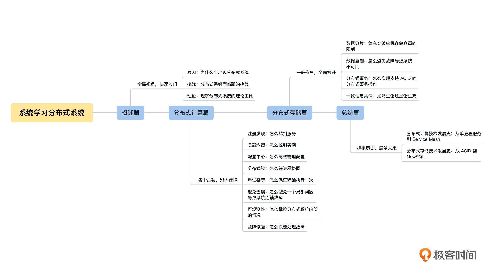

- 00 开篇词 掌握好学习路径，分布式系统原来如此简单.md
- 01 导读：以前因后果为脉络，串起网状知识体系.md
- 02 新的挑战：分布式系统是银弹吗？我看未必！.md
- 03 CAP 理论：分布式场景下我们真的只能三选二吗？.md
- 04 注册发现： AP 系统和 CP 系统哪个更合适？.md
- 05 负载均衡：从状态的角度重新思考负载均衡.md
- 06 配置中心：如何确保配置的强一致性呢？.md
- 07 分布式锁：所有的分布式锁都是错误的？.md
- 08 重试幂等：让程序 Exactly-once 很难吗？.md
- 09 雪崩（一）：熔断，让故障自适应地恢复.md
- 10 雪崩（二）：限流，抛弃超过设计容量的请求.md
- 11 雪崩（三）：降级，无奈的丢车保帅之举.md
- 12 雪崩（四）：扩容，没有用钱解决不了的问题.md
- 13 可观测性（一）：如何监控一个复杂的分布式系统？.md
- 14 可观测性（二）：如何设计一个高效的告警系统？.md
- 15 故障（一）：预案管理竟然能让被动故障自动恢复？.md
- 16 故障（二）：变更管理，解决主动故障的高效思维方式.md
- 17 分片（一）：如何选择最适合的水平分片方式？.md
- 18 分片（二）：垂直分片和混合分片的 trade-off.md
- 19 复制（一）：主从复制从副本的数据可以读吗？.md
- 20 复制（二）：多主复制的多主副本同时修改了怎么办？.md
- 21 复制（三）：最早的数据复制方式竟然是无主复制？.md
- 22 事务（一）：一致性，事务的集大成者.md
- 23 事务（二）：原子性，对应用层提供的完美抽象.md
- 24 事务（三）：隔离性，正确与性能之间权衡的艺术.md
- 25 事务（四）：持久性，吃一碗粉就付一碗粉的钱.md
- 26 一致性与共识（一）：数据一致性都有哪些级别？.md
- 27 一致性与共识（二）：它们是鸡生蛋还是蛋生鸡？.md
- 28 一致性与共识（三）：共识与事务之间道不明的关系.md
- 29 分布式计算技术的发展史：从单进程服务到 Service Mesh.md
- 30 分布式存储技术的发展史：从 ACID 到 NewSQL.md
- 春节加餐 技术债如房贷，是否借贷怎样取舍？.md
- 春节加餐 深入聊一聊计算机系统的时间.md
- 春节加餐 系统性思维，高效学习和工作的利器.md
- 结束语 在分布式技术的大潮流中自由冲浪吧！.md
00 开篇词 掌握好学习路径，分布式系统原来如此简单
你好，我是陈现麟，现在是伴鱼技术中台负责人。
欢迎你加入到分布式系统这门课程的学习中，说起分布式系统，它发展到今天，已经是互联网公司 IT 架构的事实标准，正在深刻地影响着 IT 基础建设的各个方面。在分布式系统中，站在不同的层面会看到不同的分布式系统，总有一个层面能找到 IT 工程师研发工作的场景。
如果站在单一应用层面，我们看到的是单体服务和多服务的分布式系统；如果站在公司层面，我们看到的是单机房、多机房或者跨洲际的分布式系统；如果站在整个互联网的层面，那么基于 TCP/IP 协议构建的整个互联网，就是一个超大规模的分布式系统。可以说，分布式系统已然是 IT 工程师的一门必修课了。
同时，因为分布式系统慢慢成为了互联网公司的标准架构，所以对于后端工程师来说，是否能系统性地理解分布式系统是初级工程师和资深工程师之间最显著的差别。总而言之，学习分布式系统是非常值得我们投入的一件事情。
分布式系统的学习误区
不过你也可能会感到疑惑，既然分布式系统已经覆盖了我们工作中的方方面面，而且发展得如此成熟，你也有过一些相关的实践，还花了不少的时间来学习，可为什么还是无法掌握分布式系统的命脉呢？
我们一起来分析一下，你是不是还在这样处理分布式问题。
在做架构设计和选型的时候，因为没有知识系统做支撑，所以不能系统性地思考，处理问题也没有十足的把握；在系统稳定性这种非常重要的问题上，只能通过 case by case 的方式来处理，不能从根本上直接解决由于分布式架构引入的问题。
再来看看你的学习路径，你可能读过一些分布式系统的论文，想通过这些论文来学习分布式系统架构设计的原则、思路和取舍，但是却因为内容枯燥、无趣，很难有共鸣感促使自己坚持下去；你还深入研究过一些分布式系统的源码实现，想从代码的维度去学习分布式系统的实现细节，但是经常学完就忘，效果一点也不好。
最后你花费了不少时间，将分布式系统中的知识点，在各个系统间进行横向地比较和总结，想要更系统、更深刻地理解分布式系统，但是却因为自己对分布式系统的认知和经验有限，导致学习的进展非常缓慢，了解知识的深度和广度都不太够。
如果你也有类似的感觉，不妨花点耐心听我继续给你分析分析。
从我的经验来看，初学者想要高效且系统性地掌握分布式系统，这本身就是一个悖论。不管你有多努力，要知道理论与实践之间是有一道巨大的鸿沟的。你很可能会被场景、时间、自身积累与理解程度等原因限制住，导致学习事倍功半，实践也效率低下。而对于这个主题来说，论文、源码等资料的学习仅仅是入门，我们还需要结合业务场景、工作经历和实践经验，再加上思考与时间去慢慢沉淀才可以。
为什么我会这样说，听完我的经历，也许你就明白了。
学习路径的重要性
时间回到六年前，那是我在小米工作的第四年。当时的我已经做过业务功能开发和基础架构开发，还在一些技术领域有了比较深入的尝试，比如做过单机 200+W 的长连接系统，也做过峰值 100+W QPS 的 Web 服务。这时的我已经有了分布式技术的一些实践和相对丰富的经验。
但是当我去做一个实时计算的项目，面对任务调度、消息确认和故障恢复等需要多方面分布式知识来指导架构设计的模块时，还是显得捉襟见肘。主要原因就是在初学阶段，我以为恶补了一些相关知识，就可以大刀阔斧地干一场了，然而却是只见树木，不见森林。
直到后来，我到伴鱼负责运维、数据库、服务治理、基础服务、DevOps 和 AI 能力等相关的技术中台建设，同时还负责过一段时间的数据中台和业务中台的建设。在这期间，我带着团队从 0 到 1 搭建了一个企业级的分布式系统，经历了一个分布式系统从小到大，从简单到复杂的完整演进过程。
这段经历让我对分布式系统有了更全面、深刻的认知。我熟悉了分布式系统中，每一个组件的设计原则，这让我能够站在一个全局的角度，去思考分布式系统中各个组件之间的关联与取舍。
如果将分布式系统比作一片森林的话，那么 6 年前的我进入到森林中近距离地考察、调研和实践过，我知道这里为什么要种柏树和杨树，以及怎么种好它们，但是却不知道柏树和杨树应该怎么搭配，也不知道为什么不选择种柳树。
而现在的我已经亲手培育过一片森林，还能经常以航拍的角度来审视这一片森林。进一步来说就是，我不仅知道了分布式系统是什么样子的，还知道分布式系统为什么是这个样子的，其中的挑战和权衡是什么，对分布式系统也有了清晰的知识脉络与理解。
这里也附上一份参考资料，是我之前参加的一个知乎圆桌会议，里面记录了我对分布式系统的理解，希望能够帮到你。
总而言之，对于分布式系统这样一个庞大的知识网络，经过我 6 年的深入研究，更加笃定了一件事，就是一定要有一条明确的学习路径，从最根本的原因出发。对于初学者来说，要多问自己为什么，然后再思考怎么做。在技术理解与实践中反复横跳，才能由点成线；在总结中抓住技术实现的关键点和系统脉络，不迷失于细节，才能连线成网。而这些都将是我在这个专栏中交付给你的。
希望你也能透过我的实践、思考、经验与总结，形成自己的认知。
课程设计
本着明确学习路径的目标，历经用户调研、专家调研等多个环节的打磨，最终这门课的设计思路如下。
首先，找到分布式系统中稳定不变的知识、原理和解决思路。
比如注册发现的原理、故障处理的思路和 CAP 理论等等。为什么首选这些呢？
细数分布式系统，技术要点其实有很多，包括 MapReduce 之类的分布式批处理技术，Flink 之类的分布式流计算技术和 Istio 之类的分布式在线业务技术。但万变不离其宗，只要我们掌握了上述这些“宗”，那么再去研究其他技术时，就会实现一通百通的效果。
其次，去繁从简。
我们不会讨论分布式批处理和流计算，只聚焦于日常工作中你接触最频繁的在线业务分布式系统，依据是否有状态将其分为“分布式计算”和“分布式存储”这两大部分，从简单到复杂依次给你介绍分布式系统的相关知识与原理，以及我对分布式系统的实践、思考与总结。
具体来说，整个专栏将分为四个递进的模块，学习计划如下：-

概述篇
学习一个知识应该先理解这个知识的来龙去脉，所以在一开始的概述篇中，我们先来讨论分布式系统产生的过程：它为什么会产生，产生后解决了什么问题，又带来了哪些新问题，遇到哪些方面的挑战。
通过“概述篇”的学习，你可以比较好地抓到分布式系统的脉络和关键点，有了很强的学习目标和路径，就不会迷失在各种系统和框架实现的细节中了。
分布式计算篇
分布式计算是你日常工作中接触最多的分布式技术，这部分看起来像是微服务相关的知识，但是我们不是从微服务的角度来讲解的。因为分布式系统有各种各样的实现形式，而微服务只是其中的一种具体的实现形式，所以，我们会从单机系统演进到分布式系统后，引入哪些新问题的角度，在技术原理层面一个一个讨论并解决这些问题。
你在学习之后，可以在各种系统和场景中理解和运用它，并且知道在系统设计层面应该如何取舍。由于这一部分的内容你平时都有接触，所以学习起来的难度相对会比较低，共鸣会比较强烈。
分布式存储篇
这一部分你可以理解为是分布式技术篇中的进阶篇，我们对计算进行分布式扩展后，再一起来讨论存储的分布式扩展。这里我们从简单到复杂，一起讨论数据分片、数据复制、分布式事务和一致性等相关的知识。
掌握之后，再做架构设计时，你会发现思维的深度和广度都得到了提升。
总结篇
待上面三个模块的内容学习完成后，你已经对分布式系统的重要原理有了系统性地理解，这个时候，我们再一起来看分布式系统的发展历程和未来趋势。
我们从分布式计算的角度，一起讨论分布式系统是怎么从单机系统演进到 Service Mesh 的；还会从分布式存储的角度，一起讨论分布式系统是怎么从单机系统的 ACID 演进到 NewSQL 的。最终，交给你一张继续深入学习的路线图。
最后，我想说的是，这个专栏最大的价值就是能够系统性地解决你的问题，不需要你花费大量的精力再进行一次低效的探索。
并且，在专栏中，我还分享了关于学习知识和解决问题的思考方式，以及我对分布式系统的一些经验和思考。希望通过这个专栏，不仅能帮你系统性地学习分布式系统，还能帮你掌握学习知识和解决问题的思维方法，让你的工作和生活变得越来越好！
在学习过程中，如果你有不懂的地方，欢迎你在留言区问我，我们一起讨论和交流。最后，你可以给自己立个 Flag，每节课都在评论区分享思考题的思路，通过主动性学习和思考来提高学习的效率和效果，等到 3 个月后，我们再来一起验收。
我相信只要你肯坚持，就一定会有巨大的提升，希望到时候对于分布式系统这个领域，你能有“昨夜西风凋碧树，独上高楼，望尽天涯路”的感受。我们一起加油吧！
© 2019 - 2023 Liangliang Lee. Powered by gin and hexo-theme-book.